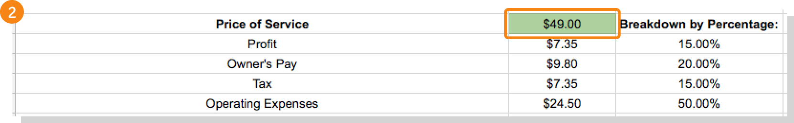
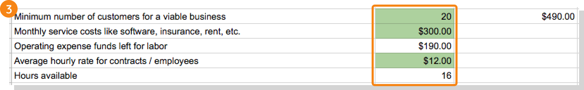
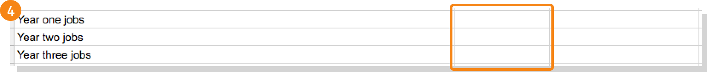

Every day, everywhere, people are saying, “I’d love to run my own business. I just don’t know what kind I’d start.” It’s a common pain point. The trick is to review your options, taking note of the skills you have and brainstorming ways to monetize different business models.
Before drilling down into a specific niche, some higher-level brainstorming is a good way to start. In this post, we’ll look at a few different types of online businesses, how you might monetize them, and how much money you could make.
As you ponder what type of online business you might launch, try and find an idea for which you can answer “yes” to these questions:
Do you care about it? Does it fulfill a need? Do the people who would have interest in your idea also have the money to pay for it? Could you find a way to differentiate yourself from the competition?
In Chapter 3, we’ll talk more about choosing a niche, but for now, check out these basic business types.
Set up your own ecommerce store selling real, live, physical products. You can sell physical goods from a digital storefront, offering convenience and selection to customers while avoiding the big barriers that stand between you and a brick-and-mortar storefront.
Foundr offers Start & Scale, an online course designed to teach you everything you need to know to build your own ecommerce store from the ground up, and potentially scale it to the point where you make millions.
The cost of entry for ecommerce varies. You will need to start an online store, and depending on which you choose, it could run you anywhere from a few dollars a month to a few hundred. We reviewed and compared some common ecommerce platforms here. If you house inventory, you will also need to factor in those costs as well.
For more information on how to set up an online store, register for our free masterclass:
How You Can Start a Profitable Online Store in 12 Weeks or Less
Not all products are physical. Digital offerings, including online courses and ebooks, can be big sellers. You can get creative with these kinds of goods, and they’re generally easier to create than physical products. Plus, you don’t have to worry about inventory, suppliers, and shipping. Everything is digital.
Membership websites, in which users pay on a recurring (usually monthly) basis to access a range of members-only content, are an excellent source of revenue if done right. Billing members on a recurring basis means a sustained revenue source, as long as customers find ongoing value in your site.
Selling digital products works best when you also offer free content—on a company blog, for example—to establish your authority and demonstrate your value to readers before they buy.
Selling digital products will run you the cost of creating and running a website, hosting ($10+ / month), product creation (if you outsource), and membership site costs if you go that route.
Software is a huge industry. But instead of selling one-off packages, the software as a service (SaaS) model aims to capture the same kind of ongoing revenue as the recurring billing of membership sites.
With SaaS, you host a software application on your server, generally charging a monthly fee for access.
Of all the big options we’re looking at, this is the most expensive to launch due to the big investment required to create software in the first place, but it can also generate the most recurring and steady revenue.
Offer your expertise in some area as an online coach or consultant. Via Skype or phone, you can link up with people seeking advice and training in a field you’re familiar with. Charge an hourly or per-session rate that makes sense for you.
The cost of entry for coaching services would include any services you need to run your business, such as a website and scheduling apps.
Do you have a skill that people are willing to pay money for? Providing a service like writing, editing, or graphic design on a freelance basis can be lucrative if you work hard, make connections, and find clients willing to pay you what you’re worth.
The cost of entry for a services business is similar to coaching. Additional educational materials may be desired, however, as you progress in your business.
If you want to learn how to start and scale a consulting, freelance or coaching business (any service-based business), check out our course: Consulting Empire.
Consulting Empire’s instructor Sabri Suby started his consulting business in his bedroom with his girlfriend’s laptop. Fast forward four years and he just hit $10 million in revenue with his agency and is rapidly growing. In this course Sabri teaches you everything he did to scale his income, including the phone scripts, emails and strategies he used to grow rapidly and get hordes of clients.
How can you make money from your online business? This, of course, is the key question. Without revenue coming in, this whole thing falls apart.
Here are four popular methods of monetization.
Ad networks like Google Adsense offer a simple deal: You place their ads on your website, and they’ll pay you a small amount each time a visitor clicks on an ad. The challenge in advertising is volume. Making real money with ads typically requires tons of traffic on your site.
Through affiliate networks like Amazon Associates, you market products and receive a commission when your readers make a purchase. Embed a unique URL linking to the product’s sale page, and every time someone clicks on that link and buys that product, you get money.
Drop shipping is like a cross between affiliate marketing and selling your own products. Basically, buyers place orders on your website, after which you pass those orders on to a supplier who delivers the product. Commissions for drop shipping can be fairly lucrative, often in the 20-35% range—higher than those for affiliate marketing.
Running ads or marketing for others can snag some cash, but the real money often lies in making and selling products of your own. Since it’s all you, you can count on 100% of the profits from each widget you sell.
Your main goal is to generate revenue. Here are four ways to do it:
Throw ads up on your website and earn a small bit of cash each time a visitor clicks one.
Embed unique links into your website’s content and earn a commission for each time a visitor buys a product from that link.
Visitors buy products on your website, and you pass the orders on to a supplier who fulfills them.
Whether physical or digital, selling your own products is generally where the best money is. It’s also more work.
At this point you may be thinking, “Whoa, whoa, whoa, slow down! Can I even afford to start an online business?”
Fair question. One bright spot is that the cost of entry for an online business is lower, generally orders of magnitude lower, than more traditional business models. Here are some questions to consider.
Do I need funding?Early thoughts about starting a business often turn to investors. Should you seek funding from venture capitalists? The upside to doing so is more money to work with, which ideally means faster progress—a jumpstart ahead in the startup race. One downside to VC funding is losing some control over your business. Plus, pitching investors requires time and connections you may not have.
If seeking outside funding does interest you, however, here are a few resources from Foundr:
- A Beginner’s Guide to Funding a Startup
- What’s the Best Way to Fund Your Startup—VC, Crowdfunding? Or Something New?
- Top Investors Share What They Love (and Hate!) About Your Startup Pitches
You could also bypass the gatekeepers and go straight to your future customers. With crowdfunding, you seek smaller contributions from a larger number of people, ordinary customers interested in seeing your idea become reality. Crowdfunding is great because it serves to validate an idea and gather feedback, while at the same time securing funding.
Yet fewer than half of crowdfunding campaigns succeed, so if you want to go this route, do some research. Running a successful crowdfunding campaign has become something of an fine art, and demands some knowhow. If you’re itching to get on Kickstarter or Indiegogo, you should read up first. Here are some resources from Foundr to get you started:
- How to Crowdfund Like the Pros And Get (Lots of) Money for Your Idea [Infographic]
- Foundr magazine special issue: The Ultimate Guide to Crowdfunding
- How we Generated $200,589 of Pre-Sales for our Coffee Table Book Using Kickstarter
- 16 Crowdfunding Experts Share Their Top Tips and Advice on How to Crush Your Next Crowdfunding Campaign
All of that said, we should note that you maybe, probably, don’t need funding. It’s entirely possible to launch your online business successfully without any outside capital.
Where funding can come in handy, though, is when starting a software as a service (SaaS) company, or when you’re developing hardware or other physical products, which often entail big upfront costs. It’s also more common to see entrepreneurs raising capital once they’ve got a couple of businesses under their belts, and have the track record and connections to secure outside investment.
What about a loan?If you want to quit your job right away, you could live off a loan while building your business.
Emphasis on could. It’s a risky strategy. What if your idea flops? What if revenue isn’t coming in exactly how, and when, you expected? What if unforeseen problems or costs pop up? This isn’t usually the smartest route and we don’t recommend it.
What else can I do?Instead of seeking funding, consider the alternative: launching your business with whatever cash you have and building it out from there. You don’t need a lot of money to do this. As revenue slowly starts to trickle in, you can reinvest it right back into the business, creating a cycle in which your company grows and grows.
Bootstrapping means that your business can be a side hustle, something you work on in your spare time while maintaining your main source of income. You can ease into it even while working your normal job, and start out with a minimum viable product to see what works (we’ll talk more about this in Chapter 5). Once your idea is tested, you can save up money and go wild, eventually building up enough income and cushion to warrant leaving your 9-to-5.
Full disclosure: We’re pretty big fans of this approach, and that’s how Foundr itself got started. Based on our discussions with entrepreneurs, and our own experience, there are so many low-cost ways to ease into entrepreneurship, that the risk of taking on investors or debt are simply not necessary most of the time. Not everyone agrees with this, and every business and founder is different, but that’s our two cents on this age-old debate.
How Much Money Can You Make?It’s impossible to predict how much revenue you’ll bring in during that first month, year, whatever. Some people get lucky and reach their goals within a few months. Many work their asses off for years before seeing results.
What you can do, though, is make an educated guess. Once you’ve selected a model for your online business, figured out how to monetize it, and determined a niche (more on that in the next chapter), you can use a worksheet like the one below to do some back-of-envelope calculations about what you’ll need to do to reach your income goals (here’s the Foundr blog post where we first introduced the worksheet).

NOTE: Once you open the link, go to File > Make a copy… to get a version of the sheet that you can edit.
Add a revenue goal by changing the amounts in the orange boxes. Changing these values will give you numbers for monthly revenue, personal income, and other metrics based on your revenue goal. Editing the blue boxes—which represent an idea of how many customers you aim to serve in each year—will tell you how much money you need to get from each customer on a yearly and monthly basis.
In the green box, enter the cost of one unit of your product or service. This spits out a breakdown of where you can put that money, based on the percentages in the right-hand column. (If you want to get advanced, you can alter those percentages. Just make sure they add up to 100%!)
Here’s where the values generated in Step 2 come into play. You can edit the three boxes: how few customers you can have while still maintaining a viable business; the total of monthly costs like software, rent, etc.; and the average hourly wage or rate you pay your workers. This breaks your operating expenses down so you know how much you need to spend on service costs and how much is left over to pay for labor.
Here, you can record how many jobs you need to aim for each year.